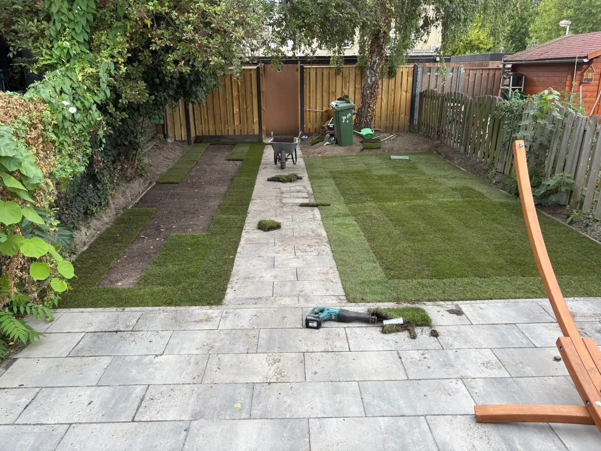

Van kale grond of een versleten gazon naar een strak groen resultaat, met complete bodemverbetering en de keuze tussen zaaien of grasmatten.

Een mooi gazon vraagt meer dan zaad strooien. Of je nu start met kale grond of een oud, versleten gazon, wij beginnen met een complete bodemverbetering: afwerken, egaliseren en de grond op de juiste manier voeden. Die solide basis bepaalt hoe mooi en hoe lang jouw gazon meegaat.
Daarna kies je samen met ons de aanpak die bij je past: inzaaien voor een budgetvriendelijk resultaat, of grasmatten voor direct groen. Wij begeleiden je door het hele proces en geven nazorgadvies zodat jouw gazon er jaar na jaar mooi bij staat.
Vrijblijvend offerte aanvragenWij helpen je in al deze situaties, groot of klein, nieuw of renovatie.
Je tuin is na het bouwen een kale vlakte geworden en wil je snel aanpakken.
Je huidige gazon heeft kale plekken, mos of is simpelweg aan vervanging toe.
Je wil een strak, egaal groen oppervlak in plaats van een hobbelig gazon.
Je begint helemaal opnieuw en wil een groene basislaag als fundament van de tuin.
Stap voor stap naar een duurzaam groen resultaat.
We bekijken de grondsoort en bepalen de beste aanpak voor jouw situatie.
We frezen, egaliseren en bemesten de grond voor een optimale basis.
Graszaad voor een budgetvriendelijk resultaat, of graszoden voor direct groen.
We geven tips voor bewatering en maaischema zodat jouw gazon aanslaat.
Met graszoden heb je direct een mooi groen gazon, geen weken wachten.
Professionele grondbewerking zorgt voor een perfect vlak eindresultaat.
Een gazon is zacht, veilig en ideaal voor kinderen en huisdieren.
Vraag vandaag nog vrijblijvend een offerte aan. Wij reageren binnen één werkdag.
Offerte aanvragen →